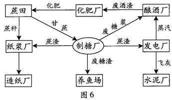

2013年广东省学业水平测试
制作：吕群
幻灯片切换效果
None - Fade - Slide - Convex - Concave - Zoom
选择班级
幻灯片样式
Black (default) -
White -
League -
Sky -
Beige -
Simple
Serif -
Blood -
Night -
Moon -
Solarized
1．目前影响我国人口生育率高低的最主要因素是
A．计划生育政策
B．经济发展水平
C．受教育程度
D．传统观念
2．造成亚欧大陆中纬度东西两岸气候差异的主要原因是
A．太阳辐射
B．纬度位置
C．大气环流
D．下垫面性质
3．南水北调工程改变的水循环环节主要是
A．水汽输送
B．地表径流
C．蒸发
D．降水
图1为地壳物质循环示意图。读图并结合所学知识，完成4—5题。
4．由图可知
A．甲为变质岩
B．乙为沉积岩
C．丙为岩浆岩
D．丁为岩浆
5．下列描述符合地壳物质转化过程的是
A．由乙到丁为冷却凝固作用
B．由甲到丁为外力作用
C．由丙到甲为重熔再生作用
D．由甲到丙为变质作用
6．下列行为或观点符合可持续发展理念的是
A．竭泽而渔
B．留得青山在，不怕没柴烧
C．推广使用一次性木筷
D．洗衣服时一直开着水龙头
7．下列各组地域单元中，可以按照同一类指标归类的是
A．黄河流域、东南丘陵、寒带
B．广东省、广州市、云贵高原
C．热带、温带、江南丘陵
D．湿润地区、半干旱地区、干旱地区
8．某人北京时间10：00乘飞机从北京出发，飞行了7个小时后抵达某城市，此时该城市当地区时为11：00，则该城市位于
A．东七区
B．西七区
C．东二区
D．西十一区
读某城市建成区现状示意图（图2）和该城市3个年份建成区扩展示意图（图3），箭头 表示河流流向。读图并结合所学知识，完成9-11题。
9．据图判断，该城市的空间扩展方向主要是
A．南北方向
B．东西方向
C．东北一西南方向
D．西北一东南方向
10．影响该城市空间扩展方向的最主要因素是
A．铁路
B．高速公路
C．风向
D．河流
11．图2扣适合在甲地布局的工厂是
A．自来水厂
B．电镀厂
C．化工厂
D．有色金属冶炼厂
12．在干旱、半干旱地区，农业发展的主要限制性因素是
A．地形
B．土壤
C．水源
D．市场
图4是某地种植 X、Y、Z三种农产品的利润与城市距离的关系图。读图并结合所学知识，完成13—15题。
13．在距城市20-60km。
范围内，利润最高的农产品是
A．X
B．Y
C．Z
D．X、Y、Z
14．X、Y、Z可能分别为
A．鲜奶、花卉、粮食
B．粮食、鲜奶、花卉
C．粮食、花卉、鲜奶
D．鲜奶、粮食、花卉
15．影响Y布局的主要区位因素是
A．水源
B．市场
C．土壤
D．地形
16．我国不同补给类型的河流，其汛期出现的季节不同。一般规律是
A．以湖泊水补给为主的河流，汛期主要出现在春季
B．以高山冰雪融水补给为主的河流，汛期主要出现在夏季
C．以地下水补给为主的河流，汛期主要出现在秋季
D．以雨水补给为主的河流，汛期主要出现在冬季
下表为某城市多年平均气温一降水统计数据。据此并结合所学知识，完成17—18题。
| 月份 | 1月 | 4月 | 7月 | 10月 | 1—12月 |
|---|---|---|---|---|---|
| 月均温(℃) | 13.3 | 18.0 | 25.7 | 22.7 | 19.9 |
| 月降水量(mm) | 190.9 | 46.3 | 0.3 | 60.2 | 825.5 |
17．该城市所属气候类型为
A．地中海气候
B．热带草原气候
C．温带大陆性气候
D．温带海洋性气候
18．该市最适宜种植的水果有
A．荔枝
B．椰子
C．香蕉
D．葡萄
19．工业布局的一般原则有
A．规模大、对空气有污染的工业应布局在中央商务区
B．规模小、基本无污染的工业可以少量布局在城区
C．污染严重的企业可布局在城市边缘或近郊区
D．大气污染严重的企业应布局在当地盛行风向的上风向
20．图5所示各组T业部门中，劳动力为主导布局因素的是
A．①
B．②
C．③
D．④
21．下列工业企业的区位选择对大气环境质量要求较高的是
A．精密光学仪器厂
B．服装厂
C．机械厂
D．钢铁厂
22．创意产业是指运用创造性智慧进行研究、开发、生产、交易的各种行业和环节的总和。 影响创意产业区位选择的最主要因素是
A．原材料
B．便利交通
C．优惠政策
D．高素质人才
23．下列现象反映由沿海向内陆的地域分异规律(经度地带性)的是
A．塔里木盆地的绿洲
B．横断山区由山麓到山顶的植被变化
C．北京到乌鲁木齐的植被变化
D．海口到哈尔滨的植被变化
24．珠江三角洲地区所属的自然带类型是
A．热带雨林带
B．亚热带常绿硬叶林带
C．温带落叶阔叶林带
D．亚热带常绿阔叶林带
25．2011年9月29日，第17号强台风“纳沙”在海南沿海登陆。台风“纳沙”所属的天气系统是
A．气旋
B．暖锋
C．反气旋
D．冷锋
26．能在短时间内获得地面植被分布信息的技术手段是
A．遥感
B．地理信息系统
C．全球定位系统
D．通信技术
图6为某企业集团生态产业园区的生产联系示意图。据此并结合所学知识，完成27—28。
27．影响制糖厂布局的主导因素是
A．技术
B．能源
C．原料
D．市场
28．下列描述符合该生态产业园区实际的是
A．企业的集聚避免了市场的竞争
B．技术协作带来了企业的集聚
C．企业彼此之问形成了生产上的联系
D．第一产业和第二产业之问不存在物质循环
29．可能含有完整古生物化石的岩石是
A．岩浆岩
B．变质岩
C．花岗岩
D．沉积岩
生态建设是促进城市可持续发展的必然选择。读图7并结合所学知识，完成30-31题。
30．图中①②③④四类城市发展模式，最不可取的是
A．①
B．②
C．③
D．④

31．生态城市建设的核心是协调好社会经济发展与生态环 境质量之间的关系，这突出体现了可持续发展的
A．共同性原则
B．公平性原则
C．持续性原则
D．经济性原则
32．太阳活动对地球的影响可能
A．引发台风和海啸
B．引发干旱、洪涝等灾害
C．使青藏高原海拔升高
D．加剧酸雨危害
33．5000 E大米从辽宁大连运到广州，最经济实惠的运输方式是
A．铁路
B．公路
C．水运
D．航空
34．观光农业是近年来兴起的一种农业与旅游业交叉的新兴产业。发展观光农业有利于
A．提高粮食产量
B．增加农民收入
C．改良农产品品质
D．促成一、二产业结合
图8为世界部分地区气压带、风带位置示意图，箭头表示风向。读图并结合所学知识，完成35-37：
35．图中M地的气候类型是
A．地中海气候
B．亚热带季风气候
C．热带雨林气候
D．温带海洋性气候
36．此时江苏省正值
A．春季
B．夏季
C．秋季
D．冬季
37．图中M地气候的成因是
A．气压带、风带的位置移动
B．海陆热力性质差异
C．常年受副热带高气压控制
D．终年受西风带的影响
38．影响秦岭南北自然带差异的主要自然因素是
A．热量和降水
B．光照和风速
C．径流和蒸发
D．植被和土壤
39．下列关于环境承载力描述错误的是
A．环境承载力反映了区域地理环境对人口的承载能力
B．环境承载力在区域面积一定的情况下是恒定不变的
C．环境承载力会随着科技的发展而逐渐提高
D．一定条件下环境承载力随着空间的扩大而增大
某时广东某地(23°N，113°E)学生在操场测得旗杆影子为一天中最短。据此并结合所学知识，完成40—41题。
40．此时，北京时间为
A．12：00
B．12：16
C．12：28
D．11：32
41．此地一年中正午太阳高度角最大值为
A．23°26′
B．66°34′
C．90°
D．89°34′
42．不同时期人地关系的状况是
A．采猎文明时期，人类不受地理环境制约
B．农业文明时期，人地关系全面恶化
C．工业文明时期，人地关系初现矛盾
D．后工业文明时期，人地关系走向协调
43．霜冻多出现在晚秋或冬季晴朗的夜晚，主要是因为此时
A．地面辐射弱
B．太阳辐射强
C．大气反射强
D．大气逆辐射弱
图9为太阳系中公转轨道相邻的三大行星相对位置示意图。读图并结合所学知识，完44-45题。
A．是北极科考的黄金季节
B．地球处于近日点附近
C．我国从南向北白昼越来越短
D．北京正午太阳高度角达最小值
45．与①、②行星相比，地球上存在生命的条件有
A．适宜的大气厚度和大气成分
B．太阳辐射
C．复杂的地形和岩石圈
D．地震和火山活动
46．聚落的类型、分布、规模与该区域的地理环境特征有密切关系。以下聚落形态与区域相匹配的是
A．网格状聚落——干旱地
B．零散小聚落——平原地区
C．条带状聚落——河谷地
D．团块状聚落——高山地区
47．某村因周边森林被伐，泉水干涸，后来植树造林、封山育林，泉水重现。这体现了地理环境的
A．整体性
B．差异性
C．稳定性
D．普遍性
48．到南极大陆进行科考最佳的季节是
A．北半球冬季
B．南半球冬季
C．北半球春季
D．南半球春季
图10是某海区表层海水等温线分布示意图，甲为洋流流向。读图并结合所学知识，完成49—50题。
49．该区域所在半球和洋流性质分别是
A．北半球、暖流
B．北半球、寒流
C．南半球、暖流
D．南半球、寒流
50．该洋流对沿岸气候的影响是
A．增温、增湿
B．增温、减湿
C．降温、增湿
D．降温、减湿
51．目前，我国人口迁移的最主要目的是追求
A．更高的社会地位
B．更优的自然环境
C．更多的休闲时间
D．更高的经济待遇
52．一般情况下，大型购物中心应布局在
A．人口密度大、消费水平低的地
B．人口密度大、消费水平高的地区
C．人口密度小、消费水平低的地区
D．人口密度小、消费水平高的地区
53．广东沿海地区在每年三、四月份的某些时段，室内的墙壁、地面会出现“冒水”现象，人们称之为“回南天”。“回南天”的形成原因是
A．暖湿气流侵入
B．寒潮过境
C．台风即将来临
D．冷空气南下
54．下列环境问题在柴达木盆地发生概率最大的是
A．酸雨
B．赤潮
C．水土流失
D．土地荒漠化
55．在罗布泊进行科考，可为科技工作者全天候提供地理位置信息的技术是
A．遥感
B．地理信息系统
C．全球定位系统
D．管理信息系统
56．下列区域中，受台风灾害影响较大的是
A．河西走廊
B．四川盆地
C．台湾岛
D．河套平原
57．每逢我国传统佳节，许多旅外华人喜欢聚集在一起。这主要受
A．国家政策的影响
B．民族文化的影响
C．交通条件的影响
D．地形气候的影响
58．我国不同自然区的环境特征差异显著。以下描述与其对应区域相匹配的是
A．早穿棉袄午穿纱，围着火炉吃西瓜——柴达木盆地
B．夏季高温多雨，冬季寒冷干燥——青藏高原
C．一山有四季，十里不同天——东北平原
D．天无三日晴，地无三尺平——长江三角洲
图11为区域产业结构图，图中①②③表示产业发展的不同阶段。读图并结合所学知识，完成59-60题。
59．①阶段的基本特征是
A．第一产业所占比重最大
B．第二产业所占比重最大
C．第三产业所占比重最大
D．三大产业比重相等
60．从产业发展的一般规律来看，区域产业结构演变的顺序是
A．①→②→③
B．②→①→③
C．③→①→②
D．③→②→①
61．大面积砍伐森林可能引发的环境问题有(双选)
A．酸雨污染蔓延
B．臭氧层空洞扩大
C．水土流失加剧
D．生物多样性减少
62．近十年来，我国城市化发展迅速，主要表现在
A．城市空心化日益明显
B．城市人口比重显著提高
C．逆城市化现象显著
D．城市规模迅速扩大
63．为减轻城市交通压力，可以采取的合理措施是
A．错开上下班时间
B．大力发展公共交通事业
C．鼓励私人购车，解决乘车难问题
D．禁止一切外地车辆进入
洞庭湖位于长江中游。在同样的水位线，1954年容积为314亿立方米，1998年容积为170亿立方米。据此并结合所学知识，完成64—65题。
64．洞庭湖对长江流域自然环境的影响主要有
A．减少长江中游枯水期径流量
B．削减长江下游汛期洪峰流量
C．增大长江上游洪水期径流量
D．调节湖区周围局地小气候
65．引起洞庭湖蓄水能力变化的主要原因可能是
A．入湖泥沙增多
B．引水灌溉
C．上游修建水库
D．围湖造田
66．与火电相比，水电的优点是
A．可再生
B．投资少
C．清洁
D．受气候影响小
67．农业生产与地理环境密切相关。下列组合合理的是
A．四川盆地——大牧场放牧业
B．宁夏平原——灌溉农业
C．长江中下游平原——水稻种植业
D．鄱阳湖平原——绿洲农业
68．近年来，珠江三角洲的玩具制造厂向江西转移的主要原因是
A．政策更加优惠
B．土地租金更低
C．市场更加广阔
D．临近技术中心
69．下列地貌以风力作用为主要成因的是
A .A
B．B
C．C
D．D
70．适合我国西北地区农业发展的措施有
A．人工降雨，推广水稻种植
B．开挖鱼塘，发展水产养殖
C．因地制宜，调整农林牧比重
D．利用光照，发展特色农业